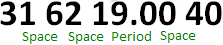

The Contents panel of the SpecsIntact Explorer is governed by the Available Projects panel. This content is dynamically generated and updated in response to the selected folder within the project hierarchy such as the main  Jobs or
Jobs or  Masters folders, the individual
Masters folders, the individual  Job or
Job or  Master folders, or subfolders. Files can be opened in the SI Editor or other third-party programs like Adobe Acrobat, Microsoft Word, Excel, Notepad, and web browsers. For quick identification, files are color-coded based on their type, making them visually distinguishable.
Master folders, or subfolders. Files can be opened in the SI Editor or other third-party programs like Adobe Acrobat, Microsoft Word, Excel, Notepad, and web browsers. For quick identification, files are color-coded based on their type, making them visually distinguishable.
This displays the name and title of the selected Job or Master, along with the Search Bar and column headers.
Use the Search Bar to easily navigate to a specific Division or Section within the selected Job or Master.
Column headers are displayed in the Contents panel allowing you to sort your documents by the displayed categories. The column headers will vary depending on whether you have selected the main  Jobs or
Jobs or  Masters folder or an individual
Masters folder or an individual  Job or
Job or  Master folder.
Master folder.
 Jobs: Name, Job Title, Lead Specifier, Date Created, Project Status, Contract, Location and Working Directory.
Jobs: Name, Job Title, Lead Specifier, Date Created, Project Status, Contract, Location and Working Directory.
 When the Network Optimization features are enabled, most of the Job information will remain unavailable until the Job is refreshed. This can be accomplished by selecting the Job again, toggle Job selection, or by pressing F5. Before refreshing, the Job Title will display 'Select Job to see Job Information' and the location will be shown as 'not loaded'.
When the Network Optimization features are enabled, most of the Job information will remain unavailable until the Job is refreshed. This can be accomplished by selecting the Job again, toggle Job selection, or by pressing F5. Before refreshing, the Job Title will display 'Select Job to see Job Information' and the location will be shown as 'not loaded'.
 Masters: Name, Master Title, Specifier, Date Created, and Working Directory.
Masters: Name, Master Title, Specifier, Date Created, and Working Directory.
 Job: Name, Title, Date Modified
Job: Name, Title, Date Modified
 Master: Name, Title, Date Modified
Master: Name, Title, Date Modified
 To learn more about customizing the Column Headers, refer to the SpecsIntact Explorer's View menu > Column Headers topic.
To learn more about customizing the Column Headers, refer to the SpecsIntact Explorer's View menu > Column Headers topic.
 Example of a Section Number format
Example of a Section Number format

Users are encouraged to visit the SpecsIntact Website's Support & Help Center for access to all of our User Tools, including Web-Based Help (containing Troubleshooting, Frequently Asked Questions (FAQs), Technical Notes, and Known Problems), eLearning Modules (video tutorials), and printable Guides.
| CONTACT US: | ||
| 256.895.5505 | ||
| SpecsIntact@usace.army.mil | ||
| SpecsIntact.wbdg.org | ||